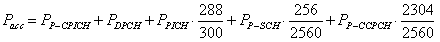

Power Levels
The individual channel power levels and the OCNS power level are expressed relative to the RMS output power of the generator. The total power of all active channels is called "accumulated power" (including OCNS channels and excluding AICH and S-CCPCH that are not active during the actual call). It is calculated under consideration of the transmission duration of each channel within a timeslot or frame.
The transmission durations are as follows:
- SCH: first 256 chips of a slot (2560 chips)
- P-CCPCH: last 2304 chips of a slot (2560 chips)
- PICH: 288 bits of a frame (300 bits)
- AICH: 4096 chips out of 5120 chips (not relevant for accumulated power)
- All other channels: transmitted during entire timeslot / frame
For HS-SCCH, HS-DSCH, E-AGCH, E-RGCH and E-HICH it is assumed that these channels are transmitted continuously, e.g. unscheduled subframes/slots filled with dummy data.
Example: For a configuration with active P-CPICH, DPCH, PICH, P-SCH and P-CCPCH the accumulated power is calculated according to the following formula:

If the resulting accumulated power would be smaller than the RMS output power of the generator, this gap is filled by OCNS channels, see "Orthogonal Channel Noise Simulator (OCNS)".